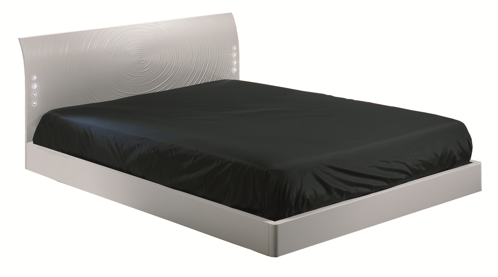
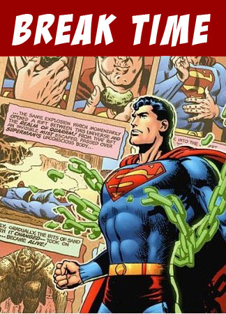

Parte 1 - Como dormir melhor?(){
Dicas
Por: Pablo Henrique Penha Silva
Melhorar o conforto da cama
Instintivamente, se você tem problemas ao dormir, o primeiro lugar que você deve olhar é a sua cama, portanto, faça-se as seguintes perguntas: Quão velho é o meu colchão? Quando eu troquei o meu travesseiro? Eu troquei o meu lençol, virol e fronha essa semana? Se as suas respostas foram não incentivadoras ou parecem-lhe não higiências, leia os próximos três parágrafos.

Retirado de: MrHouse
Sobre o seu colchão
Geralmente um colchão de espuma tem validade média de três anos e o de molas de cinco anos. Se o seu colchão já passou dessa data, é recomendado que você compre outro. Na loja de colchões prove todos os colchões que lhe chamem a atenção. Deite, role, esparrame-se, tire um cochilo, faça perguntas sobre garantia e sobre a fabricação. É importante que você tenha as respostas de suas perguntas antes de comprar um colchão. A última dica é a seguinte: use a garantia. Se você não gostou do colchão após comprá-lo, você poderá trocar por outro colchão.
Sobre o travesseiro
A vida útil de um travesseiro varia de dois a três anos. Existem vários formatos de travesseiro, assim como texturas e materiais de fabricação. Quando for comprar um travesseiro, assim como os colchões, teste-o antes de comprar, faça perguntas e veja a garantia. Falando sobre higiene, quando um travesseiro fica muito velho, além de ser apoio para a nossa cabeça, ele vira um depósito de pele e células mortas, bactérias e cabelos. Preciso falar mais para você trocar o seu travesseiro antigo?
Sobre o lençol, virol e fronha
O recomendado é trocar todos esses tecidos pelo menos uma vez a cada semana. Para as pessoas alérgicas (como a que vos escreve) esse ato faz uma grande diferença na qualidade do sono e na qualidade do ambiente.
Melhorar a sua rotina para uma ótima noite de sono
Se as dicas para a sua cama ainda não lhe ajudaram a dormir bem, talvez o problema esteja no seu dia. Abaixo temos uma lista de como fazer a sua rotina mais tendenciosa a uma boa noite de sono:
Faça exercícios
Várias fundações que estudam o sono falam que as pessoas que fazem exercícios pela manhã tendem a ter uma noite mais tranquila e relaxante de sono. Além disso, exercícios reduzem o estresse, acalmam e relaxam as pessoas. O dia ficará melhor e quando a noite chegar, você vai, literalmente, "capotar" na cama.

Retirado de: FlashBackUniverse
Faça pausas durante o dia
Além de reduzir o estresse, fazer pausas durante o dia é essencial para que o seu cérebro consiga absorver todas as informações geradas até então e também a entender e absorver novas informações. Dessa forma, você não está fazendo uma pausa somente para o seu corpo, mas para a sua mente também.
Livre-se dos eletrônicos na hora de dormir
Livre-se de todos, especialmente nos finais de semana. No meio da semana, um relógio despertador (digital ou aqueles que não ficam fazendo tic-tac) é mais do que o suficiente para dormir próximo à você. Receber ligações por engano, de amigos bêbados, ouvir barulho de emails chegando entre outros incômodos são os principais responsáveis por fazer você ficar acordado, pensando no amanhã, lembrando de problemas ainda não solucionados, etc. Portanto, deixe os eletrônicos o mais distante possível de você.
Lembre-se das dicas da vovó e da mamãe
Diminua a maior quantidade possível de luz no seu quarto, vá dormir todos os dias no mesmo horário, evite bebidas energéticas antes de dormir e nunca coma logo antes de ir deitar.
Meditação
Se você acorda várias vezes durante a noite, tente usar a meditação para voltar a dormir. Concentre-se onde acabou o seu sonho ou em voltar a dormir. Evite a vontade de abrir os olhos, levantar, checar emails ou ir trabalhar. Descanse. Concentre-se. Medite sobre o seu sono e volte a dormir. Para mais informações, use este link para aprender sobre meditação.
Ajuda online: http://www.onlinemeditation.org/
Reinicie o seu ciclo de sono
Para transformar noites péssimas de sono em uma experiência única e revitalizante, aqui temos algumas dicas de como modificar os seus habitos noturnos para alcançar uma ótima noite de sono:
Faça todas as higienes necessárias antes de ir deitar (tomar banho, escovar os dentes, usar o banheiro, etc), não beba nenhum tipo de bebida energética antes de dormir ou no jantar, fique longe de laptops, celulares e televisões, diminua as distrações externas ao seu quarto, não cochile durante o dia e siga as dicas já citadas anteriormente nessa matéria. Se você seguiu tudo, já está na cama, com os olhos fechados mas ainda sem sono, não torture-se. Levante-se e vá fazer algo que te relaxe. Por exemplo, tente ler um livro na cama ou em uma cadeira confortável durante alguns minutos. Não vá assistir TV, comer, jogar video games ou coisas do gênero. Evite ficar pensando na vida, pois você pode se estressar e continuar sem sono.
Veja um especialista do sono
Se todas as dicas acima falharam, as pessoas que dormem com ou perto de você não te aguentam mais roncando ou se remexendo na cama, visite um médico do sono. Existem várias clinicas do sono ao redor do mundo e eles podem te ajudar. Vários distúrbios no sono são responsáveis por problemas que as vezes você nem sabe que tem, como por exemplo, uma doença chamada apneia.
}